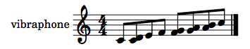
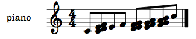
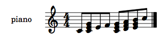
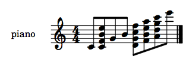
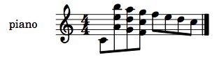
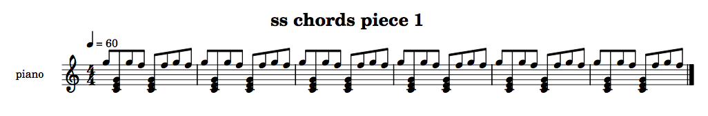
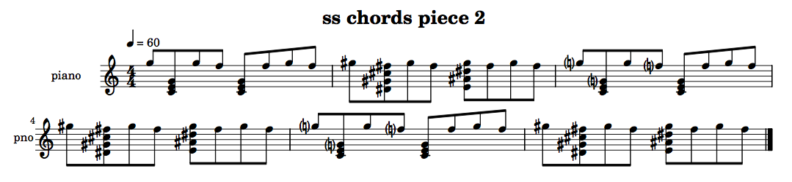
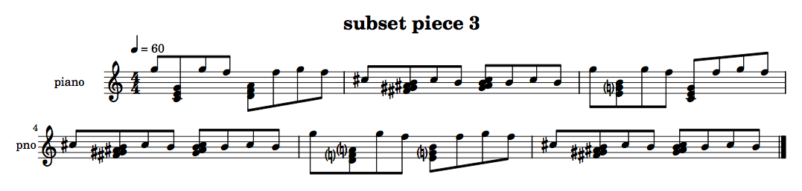

Chord functions
+ Associated example files
+ Preparing instruments for playing chords
The user can indicate that slippery chicken is to place an
automatically generated chord at a given point in the piece by
enclosing the corresponding number from the pitch-seq
curve in parentheses.
:pitch-seq-palette ((1 (3) 2 3 (5) 4 6 3))
When slippery chicken encounters a pitch-seq
number in parentheses, it first checks to see whether the given
instrument is capable of playing chords. An instrument can be
designated as able to play chords by setting the chords
slot to T in the definition of
the instrument object, as seen here:
(piano (:staff-name "piano" :staff-short-name "pno" :lowest-written a0 :highest-written c8 :clefs (treble bass double-treble double-bass) :starting-clef treble :chords t :chord-function piano-chord-fun :largest-fast-leap 9 :microtones nil :midi-program 1))
If an instrument is able to play chords, slippery chicken
requires a chord-generating function that determines how pitches are
selected from the current set when making chords for that
instrument. The user can specify which chord-generating function
slippery chicken is to use for the given instrument by
passing the variable to which that function is assigned to
the chord-function slot of the
given instrument object, as seen above.
+ The default-chord-function
If the chords slot is set to T but
the chord-function is left unspecified,
slippery chicken will select the pitches for that
instrument's chords using
the default-chord-function,
as defined in the instrument class.
The default-chord-function generates two-note chords
consisting of the pitch that would be generated by the number in
parentheses in the pitch-seq curve and the next lower
pitch from the set that is available to the instrument
at that time. If no lower pitches are available, the function chooses
the next higher pitch instead. If neither of these options can be
fulfilled, it returns the original single pitch.
Using the default-chord-function with
the vibraphone of
the +slippery-chicken-standard-instrument-palette+ and
the following set-palette, rthm-seq and
associated pitch-seq:
:set-palette '((1 ((c4 d4 e4 f4 g4 a4 b4 c5))))
:rthm-seq-palette '((1 ((((4 4) - e e e e - - e e e e -))
:pitch-seq-palette ((1 (2) 3 4 (5) (6) (7) 8)))))
…produces the following printable output:
|  |
+ Predefined chord functions
A number of chord functions have been predefined in the
file instruments.lsp and are loaded
automatically with slippery chicken. Some of the
instrument objects in the +slippery-chicken-standard-instrument-palette+
already make use of these functions, including the piano,
guitar, violin, viola, and
cello objects.
The piano-chord-fun
The definition of the piano instrument object in the
preparing instruments
for playing chords section above, for example, indicates
that slippery chicken is to use
the piano-chord-fun. That function generates four-note
chords from consecutive notes in the current set, where possible,
with the number enclosed in parentheses in the pitch-seq
being the top note of that chord, where possible.
Using the piano-chord-fun with the piano
of the +slippery-chicken-standard-instrument-palette+
and the following set-palette, rthm-seq and
associated pitch-seq:
:set-palette '((1 ((c4 d4 e4 f4 g4 a4 b4 c5))))
:rthm-seq-palette '((1 ((((4 4) - e e e e - - e e e e -))
:pitch-seq-palette ((1 (2) 3 4 (5) (6) (7) 8)))))
…produces the following printable output:
|  |
NB: The major-second clusters in the above example are the result of this function being applied to a set consisting of only major seconds. If the consecutive pitches in the set were to have larger intervals between them, the resulting chords would reflect this in their interval structure.
The chord-fun1 and chord-fun2 functions
Two other basic predefined chord functions,
namely chord-fun1 and chord-fun2, can also
be found at the bottom of the instruments.lsp file.
None of the instrument objects in
the +slippery-chicken-standard-instrument-palette+ use
either of these functions by default. The user can choose to use one
of these as the chord function for a given instrument by setting the
corresponding instrument
object's chord-function slot using
the set-slot method (see the section
on changing instrument attributes
temporarily for more detail):
(set-slot 'chord-function
'chord-fun1
'piano
+slippery-chicken-standard-instrument-palette+)
The chord-fun1 function generates three-note chords
where possible, using every second pitch from the list of pitches
currently available to the given instrument from the current set and
ensuring that none of the chords it makes span more than an
octave.
Using the chord-fun1 function with
the piano of
the +slippery-chicken-standard-instrument-palette+ and
the following set-palette, rthm-seq and
associated pitch-seq:
:set-palette '((1 ((c4 d4 e4 f4 g4 a4 b4 c5))))
:rthm-seq-palette '((1 ((((4 4) - e e e e - - e e e e -))
:pitch-seq-palette ((1 (2) 3 4 (5) (6) (7) 8)))))
…produces the following printable output:
|  |
The chord-fun2 function generates 4-note chords where
possible, using every third pitch from the list of pitches currently
available to the given instrument from the current set, with no limit
on the total span of the chord.
Using the chord-fun2 function with
the piano of
the +slippery-chicken-standard-instrument-palette+ and
the following set-palette, rthm-seq and
associated pitch-seq:
:set-palette '((1 ((c4 d4 e4 f4 g4 a4 b4 c5 d5 e5 f5 g5 a5 b5 c6 d6 e6))))
:rthm-seq-palette '((1 ((((4 4) - e e e e - - e e e e -))
:pitch-seq-palette ((1 (3) 5 7 (11) (13) (15) 17)))))
…produces the following printable output:
|  |
These two functions make use of the chord-fun-aux
function, which can be very handy for users who want to create
moderately tailored chord selection functions with only a few
standard arguments, as is described in more detail below.
User-defined chord functions
+ The chord-fun-aux function
The chord-aux-fun is a function that can be used to
create moderately tailored, user-defined chord functions.
The arguments
All internal pitch-selection processes in slippery chicken
require the arguments curve-num, index,
pitch-list, pitch-seq,
instrument, and set. For that reason, all user-defined
chord functions must also start by specifying these arguments but they
can safely be ignored and very often are even by slippery
chicken's chord functions (they are passed for the sake of
completeness). default-chord-fun describes/uses these
arguments as follows:
- The current number from the pitch-seq. Currently ignored by default.
- The index that the first argument was translated into by the
offset and scaler (based on trying to get a best fit for the
instrument and set). This can be assumed to be a legal reference
into pitch-list as it was calculated as fitting in
pitch-seq's get-notes. (zero-based.) - The pitch-list created from the set, taking into account the instrument's range and other notes already played by other instruments.
- The current pitch-seq object. Currently ignored by default.
- The current instrument object. Currently ignored by default.
- The current set object. Currently ignored by default.
(defun new-chord-function (curve-num index pitch-list pitch-seq instrument set)…
The chord-fun-aux function adds three new arguments to
this list, namely skip, num-notes,
and max-span:
(defun chord-fun-aux (curve-num index pitch-list pitch-seq instrument set
skip num-notes max-span)…
All three arguments take integers as their values.
The chord-fun-aux is designed to collect pitches from
the segment of the current set that is available to an instrument
when the chord is made (i.e. the pitch-list argument) by
passing consecutively through each pitch of that list. The
skip argument allows the user to design functions that
skip some of these notes. Setting this argument to 1
results in no pitches being skipped and chords being created from
consecutive pitches in the pitch-list. A value
of 2 for this argument takes every second pitch from the
segment of the set, a value of 3 every third, etc.
Thus, if the pitches available to an instrument at a given moment
are (C4 E4 F4 A4 B4 D5), and skip is set
to 2, a three-note chord starting on C4
will be made from pitches (C4 F4 B4).
The argument num-notes determines the number of pitches
the function will try to place in each chord. If the list of pitches
available to an instrument is too short to make a chord
with x notes, a chord with fewer pitches may be
made instead.
The max-span argument designates the largest interval
(in semitones) allowed between the bottom and top notes of the
chord. If a chord made with the specified number of notes surpasses
this span, a chord with fewer pitches may be made instead.
Making a new chord function using chord-fun-aux
New chord functions based on chord-fun-aux are made
using the usual Lisp defun macro.
(defun new-chord-function (curve-num index pitch-list pitch-seq instrument set) (chord-fun-aux curve-num index pitch-list pitch-seq instrument set 4 3 14))
Any user-defined chord function must be defined before
the slippery-chicken object is made, so that
the make-slippery-chicken function knows how to choose
the pitches for the chords.
The user first specifies the name of the new function and lists the
six arguments required for all note functions mentioned above. In the
body of the new function, the user then calls
chord-fun-aux, listing the first six arguments again
and specifying integer values for the three new arguments.
For example, the new-chord-function defined above
creates a new function that makes chords from every fourth pitch in
the segment of the current set that is available to the instrument,
aiming to make three-note chords where possible, with a maximum span
of 14 semitones between the bottom and top note of the chord.
Applying this function to the piano instrument of
the +slippery-chicken-standard-instrument-palette+ with
the following set-palette, rthm-seq, and
associated pitch-seq:
:set-palette '((1 ((c4 d4 e4 f4 g4 a4 b4
c5 d5 e5 f5 g5 a5 b5))))
:rthm-seq-palette '((1 ((((4 4) - e e e e - - e e e e -))
:pitch-seq-palette ((1 (14) (13) (12) 11 10 9 8)))))
…produces the following printable output:
|  |
+ A breakdown of the chord-fun-aux function
Since slippery chicken provides users with the flexibility
of defining their own chord selection functions, an introduction to
how a fully separate chord function may be programmed is given here
by examining the chord-fun-aux function in more
detail.
(defun chord-fun-aux (curve-num index pitch-list pitch-seq instrument set
skip num-notes max-span)
(declare (ignore set instrument pitch-seq curve-num))
(unless (and (integer>0 skip) (integer>0 num-notes) (integer>0 max-span))
(error "slippery-chicken::instruments:: skip, num-notes, and max-span must
be integers > 0"))
(let* ((start (max 0 (- index (- (* skip num-notes) skip))))
(at-start (nth start pitch-list))
(result (list at-start)))
(loop
repeat num-notes
for i from start by skip
for p = (nth i pitch-list)
do
(when (and p
(<= (pitch- p at-start) max-span)
(not (member p result :test #'note=)))
(push p result)))
(if (> (length result) 1)
(make-chord result)
(first result))))
All chord functions must be defined with the same six required arguments:
(defun chord-fun-aux (curve-num index pitch-list pitch-seq instrument set
chord-fun-aux adds three more arguments to this
list:
skip num-notes max-span)
Not all of the arguments must be used (see
the default-chord-function
page for details on the arguments). Common Lisp will print
a WARNING by default for any arguments that aren't
used. These warnings can be suppressed by using
the declare and ignore functions with the
unused arguments:
(declare (ignore set instrument pitch-seq curve-num))
In addition to its three new arguments, the only required arguments
this function makes use of are index
and pitch-list. The pitch-list is the
automatically generated sublist of pitches from the current set that
are available to the instrument at that point in the piece. This is
different from the set argument, which gives the user
access to all of the pitches in the current set, regardless of any
limiting factors. (See the documentation
on how slippery chicken
selects pitches for more detail.) The value of
the index argument is also determined internally
by slippery chicken as part of the automatic pitch selection
process. It refers to a pitch within the pitch-list.
The function then tests to make sure that the user hasn't passed a
value of 0 to any of the three new arguments, and exits
with an error if any of these values are 0:
(unless (and (integer>0 skip) (integer>0 num-notes) (integer>0 max-span))
(error "slippery-chicken::instruments:: skip, num-notes, and max-span must
be integers > 0"))
Three variables are then declared for the function. The
first, start, determines the index number for the first
pitch in the chord.
(let* ((start (max 0 (- index (- (* skip num-notes) skip))))
It does so in four concise steps: It first multiplies the
skip value by the num-notes value and then
subtracts the skip value from the result to get the
ideal index for the highest note in the chord. It then subtracts that
result from the value of the index argument to get the
ideal index for the lowest note of the chord, since the
index number is to be for the top note of the chord. Its
last step is to compare this result with 0 and choose
the higher value, so as not to generate an illegal (i.e. less than
zero) reference into a list. That value is the index of the first
(lowest) note in the chord.
The second variable is for the first pitch itself. It gets the pitch
located at the position start in
the pitch-list and assigns it to the
variable at-start:
(at-start (nth start pitch-list))
The final variable, result, is for the list of pitches
that will make up the chord. This list is initiated with just the
first single pitch of the at-start variable, and will be
expanded by new pitches as the function takes its course:
(result (list at-start)))
The function then begins a loop that is to repeat the
number of times specified by the value
of num-notes:
(loop
repeat num-notes
The first time through the loop the value of i is set
to the value of start. Each successive time through the
loop it increases the value of i by the value assigned
to the skip variable:
for i from start by skip
Each time through the loop it sets the variable p to
the pitch located at position i in
the pitch-list:
for p = (nth i pitch-list)
For each pitch p it runs three tests. It first checks
to make sure that p indeed has a value (is
not NIL); then it checks to see if the result of
subtracting the at-start pitch from p
(using the method pitch-) returns a number (semitones)
less than or equal to the value of max-span; and finally
it checks to see that pitch p is not already present in
the result list. When all of these conditions are met,
it adds p to the result list:
do
(when (and p
(<= (pitch- p at-start) max-span)
(not (member p result :test #'note=)))
(push p result)))
Now that the pitches have been collected and added to
the result list, the method first double-checks to make
sure that the result list has more than one pitch in
it. As long as this is the case, the function creates a chord from
the pitches in the result list using
the make-chord function. If the result list
has only one pitch in it, the function just returns that single
pitch.
(if (> (length result) 1)
(make-chord result)
(first result))))
This provides a powerful approach to algorithmically generating chords as chord selection for a whole piece can be refined through careful management of one simple function. For example, in you are coming into us who cannot withstand you by Michael Edwards, the muddiness created by the default piano chord, which selected low minor thirds and major sevenths, was avoided by modifying the piano chord selection function to select fourths when below a certain pitch. In this way the harmonic character of the piano in the whole piece could be changed in one fell swoop.
Chord functions and set-palette subsets
+ Example 1—One subset chord per set
One possible approach to writing user-defined chord functions
without the use of the chord-fun-aux is to
define subsets (and/or related-sets) in the
sets that are accessed by the function to create chords. This can be
done without the use of a subset-id in the
corresponding instrument object, since any user-defined
function can have access to the entire set, as described above. The
examples here employ that approach. (More information on how to use
an instrument object's subset-id slot can
be found on the pitches
page.)
One option could be to define one single chord that is to be used
any time a chord indication is encountered for a given set. As
mentioned in the section on chord-fun-aux above, any
chord function must be defined before
the slippery-chicken object is made, so that
the make-slippery-chicken function knows how to choose
the pitches for the chords. Such a function could be defined as
follows:
(defun piano-subset-fun (curve-num index pitch-list pitch-seq instrument set)
(declare (ignore curve-num index pitch-list pitch-seq instrument))
(let* ((ss (when (subsets set) (get-data 'piano-chord (subsets set) nil)))
(when ss
(make-chord (data ss)))))
This function ignores all of the required note-getting arguments
except for set. It then declares the
variable ss and says that its value will be determined
by getting the data associated with the ID piano-chord
in the subsets slot of the current set
object. The nil is for the optional argument of
the get-data method and indicates that no warning will
be printed if there is no subset named piano-chord. The
function then checks to see if
ss now has a value, and if so, it uses the data
contained in ss (i.e., the list of pitches from
the piano-chord subset) to make a chord.
NB: As a result of accessing set rather than
pitch-list, no values assigned to
set-limits-high or set-limits-low will be
taken into account. See the section
on set-limits-high and -low
for more on that feature. The set-limits could be taken
into account here by first determining
the
pitch-intersection of the subset and the
pitch-list.
Once the function is defined, it must be assigned to the instrument
that is to use it. That is done here using the set-slot
method and assigning it to the piano instrument of
the +slippery-chicken-standard-instrument-palette+:
(set-slot 'chord-function 'piano-subset-fun 'piano
+slippery-chicken-standard-instrument-palette+)
Now whenever slippery chicken encounters a chord indication
for the piano instrument, it will always make the chord
from the pitches in the subset of that set with the
ID piano-chord.
(let* ((ss-chords-piece-1
(make-slippery-chicken
'+ss-chords-piece-1+
:title "ss chords piece 1"
:instrument-palette +slippery-chicken-standard-instrument-palette+
:ensemble '(((pno (piano :midi-channel 1))))
:tempo-map '((1 (q 60)))
:set-palette '((1 ((f3 g3 a3 bf3 c4 d4 e4 f4 g4 a4 b4 c5 d5 e5 f5 g5)
:subsets ((piano-chord (c4 e4 g4))))))
:set-map '((1 (1 1 1 1 1 1)))
:rthm-seq-palette '((1 ((((4 4) - e e e e - - e e e e -))
:pitch-seq-palette ((8 (7) 8 7 (8) 7 8 7)))))
:rthm-seq-map '((1 ((pno (1 1 1 1 1 1))))))))
(write-lp-data-for-all ss-chords-piece-1 :base-path "/tmp/"))
|  |
However, the above code requires that there is a subset
named piano-chord in every set from which
chords are made for the piano. If
slippery chicken attempts to make a chord from
the piano-chord subset and that subset is not present in
the current set, it will exit with an error. A
second function could be used as a safeguard against this:
(defun piano-chord-master (curve-num index pitch-list pitch-seq instrument set)
(let* ((xss (piano-subset-fun curve-num index pitch-list pitch-seq instrument
set)))
(if xss
xss
(chord-fun2 curve-num index pitch-list pitch-seq instrument set))))
This function declares the variable xss to be the
result of the piano-subset-fun function. If the current
set has a subset named piano-chord, the result of
the piano-subset-fun will be a chord; if not, the result
will be NIL. If the result is a chord,
the piano-chord-master uses that chord. If the result
is NIL, the predefined chord-fun2 function
will be used instead.
This is now the chord-function that the piano
instrument must use, and must be assigned correspondingly:
(set-slot 'chord-function 'piano-chord-master 'piano
+slippery-chicken-standard-instrument-palette+)
Now whenever slippery chicken encounters a chord indication
for the piano instrument, it will first try to make the
chord from the pitches in the subset of that set with
the ID piano-chord. If no such subset exists, it will
make a chord using
chord-fun2:
(let* ((ss-chords-piece-2
(make-slippery-chicken
'+ss-chords-piece-2+
:title "ss chords piece 2"
:instrument-palette +slippery-chicken-standard-instrument-palette+
:ensemble '(((pno (piano :midi-channel 1))))
:tempo-map '((1 (q 60)))
:set-palette '((1 ((f3 g3 a3 bf3 c4 d4 e4 f4 g4 a4 b4 c5 d5 e5 f5 g5)
:subsets ((piano-chord (c4 e4 g4)))))
(2 ((fs3 gs3 as3 b3 cs4 ds4 e4 fs4 gs4 as4 b4 cs5 ds5 e5
fs5 gs5))))
:set-map '((1 (1 2 1 2 1 2)))
:rthm-seq-palette '((1 ((((4 4) - e e e e - - e e e e -))
:pitch-seq-palette ((8 (7) 8 7 (8) 7 8 7)))))
:rthm-seq-map '((1 ((pno (1 1 1 1 1 1))))))))
(write-lp-data-for-all ss-chords-piece-2 :base-path "/tmp/"))
|  |
+ Example 2—Cycling through many subsets of the same set
The user may also want to have several chords available to an instrument when a specific set is used. This could be done using nested subsets (see the page on pitches for more detail) and getting chords from the subset based on specific or random IDs.
In addition to getting items from a set randomly or by using specific IDs, slippery chicken also has a built-in cycling feature for many of its classes. The software will remember the last item used for some lists, allowing the user to always get the next item from that list every time the list is accessed. That approach is employed in this second example.
Using this feature makes the corresponding chord selection function much sleeker:
(defun piano-ss-fun2 (curve-num index pitch-list pitch-seq instrument set) (declare (ignore curve-num index pitch-list pitch-seq instrument)) (make-chord (data (get-next (get-data-data 'piano-chords (subsets set))))))
As with the first example, this function also only makes use of
the set argument (and, like the first example, will also
overlook any values assigned to set-limits-high
and -low). It gets the data of the data associated with
the id piano-chords in the subsets slot of
the current set. This data is an object containing pitches. Each time
the function is employed, it gets the next item in
the piano-chords subset. It then makes a chord from the
data (pitches) of that item.
However, the get-next method will only work if it is
used with one of the classes that allow cycling, and will cause
slippery chicken to exit with an error otherwise. A nested
subset would be the right kind of list, but if not all of
the sets in the piece have a nested subset, an
additional safeguard must be programmed to ensure that
the piano-ss-fun2 function is only used when the
current set contains one. This safeguard can be similar
to the safeguard from the first example, in that it runs a test, and
if the test fails, it uses one of the predefined chord functions
instead.
(defun piano-mc-2 (curve-num index pitch-list pitch-seq instrument set)
(let* ((ss (when (subsets set) (get-data 'piano-chords (subsets set) nil)))
(sss (when ss (data ss))))
(if (is-ral sss)
(piano-ss-fun2 curve-num index pitch-list pitch-seq instrument set)
(piano-chord-fun curve-num index pitch-list pitch-seq instrument set))))
This function first declares the variable ss and
assigns to it the data associated with the piano-chords
ID in the subsets slot of the current set. If there is
no subset with that ID, ss will automatically be given
the value NIL. If there is such a subset, the
variable sss is assigned to the data of that subset,
which may be a list of pitches or a nested subset. The function then
uses the is-ral function to test whether that data is a
nested subset (a recursive association list,
or ral). If it is a recursive-assoc-list,
the function uses the piano-ss-fun2 to get the next list
of pitches from that ral and make the chord, otherwise
it uses the predefined piano-chord-fun.
This function is assigned to the chord-function slot of
the piano instrument the instrument-palette
being used in the piece:
(set-slot 'chord-function 'piano-mc-2 'piano
+slippery-chicken-standard-instrument-palette+)
Now whenever slippery chicken encounters a chord indication
for the piano, it will first try to get the next nested
subset from the subset of the
current set with the ID piano-chords and
make a chord from those pitches. If no such subset exists, it will
make a chord using piano-chord-fun instead:
(let* ((subset-piece-3
(make-slippery-chicken
'+subset-piece-3+
:title "subset piece 3"
:instrument-palette +slippery-chicken-standard-instrument-palette+
:ensemble '(((pno (piano :midi-channel 1))))
:tempo-map '((1 (q 60)))
:set-palette '((1 ((f3 g3 a3 bf3 c4 d4 e4 f4 g4 a4 b4 c5 d5 e5 f5 g5)
:subsets ((piano-chords ((pno1 (c4 e4 g4))
(pno2 (d4 f4 a4))
(pno3 (e4 g4 b4)))))))
(2 ((fs3 gs3 as3 b3 cs4 ds4 e4 fs4 gs4 as4 b4 cs5))))
:set-map '((1 (1 2 1 2 1 2)))
:rthm-seq-palette '((1 ((((4 4) - e e e e - - e e e e -))
:pitch-seq-palette ((8 (7) 8 7 (8) 7 8 7)))))
:rthm-seq-map '((1 ((pno (1 1 1 1 1 1))))))))
(write-lp-data-for-all subset-piece-3 :base-path "/tmp/"))
|  |